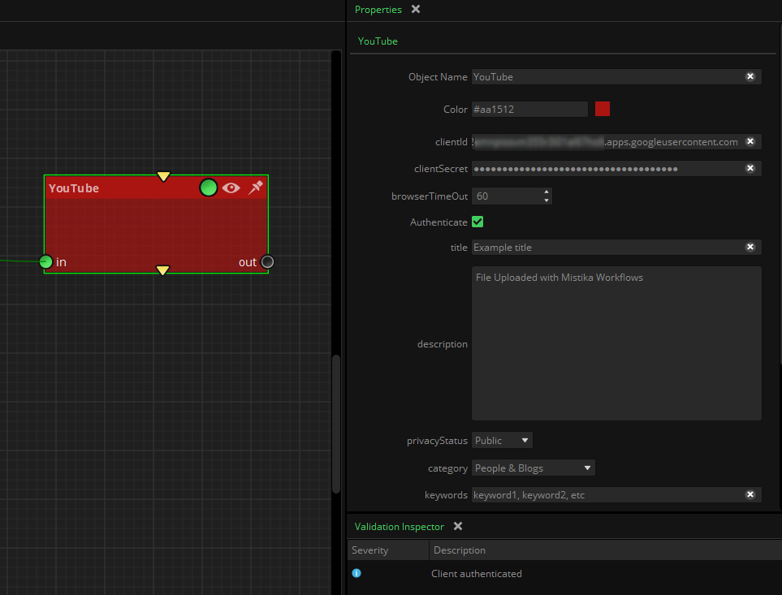

|
<< Click to Display Table of Contents >> YouTube |
Upload videos to YouTube platform.
Before you can use this node you will need to get some credentials from Google. It only needs to be done one time, but the node will not work until then:
Warning: After following the below procedure the .mwf file will contain your credentials and long term token.
Anyone having access to the .mwf file can use the associated google services in your account.
If not sure, create a dedicated google account for your workflows, rather than personal accounts.
We can't go into much detail (screenshots and so on) because Google change this procedure quite often, but basically it works as follows. Once you have a standard YouTube account:
1 - Obtain Google OAuth 2.0 cloud credentials for your project. In general your Google cloud credentials are managed in the google cloud console in this web page:
https://console.cloud.google.com/apis/credentials/oauthclient
If your never used the google console you will need to use the Create new project menu to create a new project (as a project name, for example name it "Mistika Workflows").
Having your project selected, go to Enable APIS and Services and select the google resources you want to give access to Mistika Workflows (YouTube API, google drive API, Gmail,...), and click Enable on each one.
Then go to Credentials and:
- Configure consent screen: Follow Google instructions to select if you want internal or external access from your organization. Then fill the form with your own email (both the support email and developer email). And for the app name just type Mistika Workflows. At the date of this document the rest of the fields are optional and can be left by default. Press Save and continue.
- Credentials: Go to Credentials->Create Credentials -> Oauth client ID and select ApplicationType = Desktop App, Name = Mistika Workflows. Then click Create. By doing that you will get Client ID and Client Secret that you can then use in this node. Click Save to confirm and exit.
2 - Once you have created your credentials, you need to configure them to allow YouTube API access: In the mentioned Google console go to the Enable APIs and services - > +Enable APIs and services and from the list below enable the "YouTube Data API". (note that the exact procedure may change over the time, but that is the concept)
3 - Once in Mistika Workflows, put the credentials in the node properties clientID / clientSecret, a new Authenticate checkmark will be available after few seconds. Depending on the Workflows versions it will appear as a property or in the contextual menu of the node (alternatively you can execute the workflow a first time to trigger the authentication process). Click on it and a web browser will appear where you have to login one time to your Google account (the account giving access to the google resources you want to access).
When it is done an "authentication successful" or "The authentication flow has completed" will appear. This means the node is ready to use (depending on the node more properties may appear in the properties panel for additional configuration of your Google resource).
As part of this process, if your YouTube account has multiple channels Google will ask which video channel you want to authenticate for in the same web browser, immediately after the step above (first it will ask your email, and then if there are multiple channels associated to the email account it will offer to select one of them). Please pay attention to that question because it can not be changed later, or not without deleting the token (as explained below). Note that the YouTube channel is not a property of the node because it can only be specified during the authentication process.
4 - Once you have tested the first video uploads then you will need to request YouTube to increase your quota (disk space allowed for programatically uploaded videos), because by default the permitted size for automated uploads is pretty small. You can still test this node while waiting for the quota approval, but be aware that Google only allows small videos until the quota is approved. Getting quota approved is free of cost, but it is a manual process where you need to tell YouTube the maximum space you want and why you want it. To request extended quota you will need to fill up this form
Each YouTube node can have the same credentials (same YouTube channel) or different credentials (for different channels). You will need to repeat the above steps for each new pair of credentials, but they will be remembered afterwards.
The YouTube node:

(note: most properties in this panel will not appear until valid credentials have been fulfilled).
in: The video file to be upload.
out: The video file that was uploaded
Google requires a strict authentication process involving several steps. Please check the validation inspector for related instructions and errors.
Inititally, only the credential properties are visible in the properties panel:
ClientId / Client Secret: They are the Google cloud credentials to access your YouTube project. Once you input valid credentials a new check-mark button Authenticate will appear
Channel slot: A same account can have more than one channel. If that is the case specify the channel slot here.
After valid credentials are input an authenticate button appears:
Browser Time Out: Time to wait for the user to authenticate in the Browser that was opened with the Authenticate button above. (for security reasons the browser does not let Workflows to know if the user is authenticated or not. So basically this node will open a browser and wait this number of seconds for the user to manually authenticate on it, and past this time it will try to connect to YouTube (or return control if it was unsuccessful)
After the authentication process is finished more properties will appear:
Title: Type here the title of the video as you would like it to be shown in YouTube.
Description: Type the description of the video.
Privacy Status: The type of visibility for the video in YouTube ( Public, Private or Listed )
Category: YouTube category for the video
Keywords: The video will be shown to YouTube users searching for those keyboards